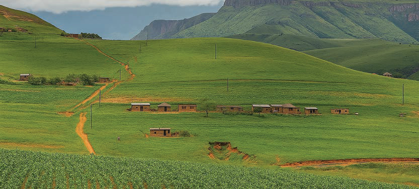

Mtawanyiko wa watu wachache
Hii ni hali ambapo watu wanaishi kwa mtindo wa kutawanyika au kusambaa katika maeneo makubwa bila mpangilio maalumu. Hii hutokea zaidi katika maeneo ya vijijini au maeneo yenye mazingira magumu, ambapo upatikanaji wa rasilimali ni kidogo, na watu wanaweza kuishi mbali na wengine. Kielelezo namba 3 kinaonesha mtawanyiko wa watu wachache.

Sababu za mtawanyiko wa watu
Mtawanyiko wa watu unatokana na sababu mbalimbali, zikiwemo sababu za kijiografia kama vile; tabianchi, maumbo ya ardhi, udongo wenye rutuba, uwepo wa rasilimali maji, na madini; na sababu za kibinadamu kama vile miundombinu, huduma za kijamii, siasa, biashara, kukua kwa teknolojia na viwanda. Hii ni kwa sababu mambo yote haya ni muhimu katika kufanya maamuzi kuhusiana na maeneo ya kuishi.
Sababu za kijiografia
Tabianchi
Tabianchi ni hali ya hewa ya eneo fulani inayodumu kwa muda mrefu, mara nyingi miaka thelathini au zaidi. Tabianchi ya mahali inachangia kwa kiasi kikubwa mtawanyiko wa watu. Maeneo yenye jotoridi la wastani, mvua nyingi,